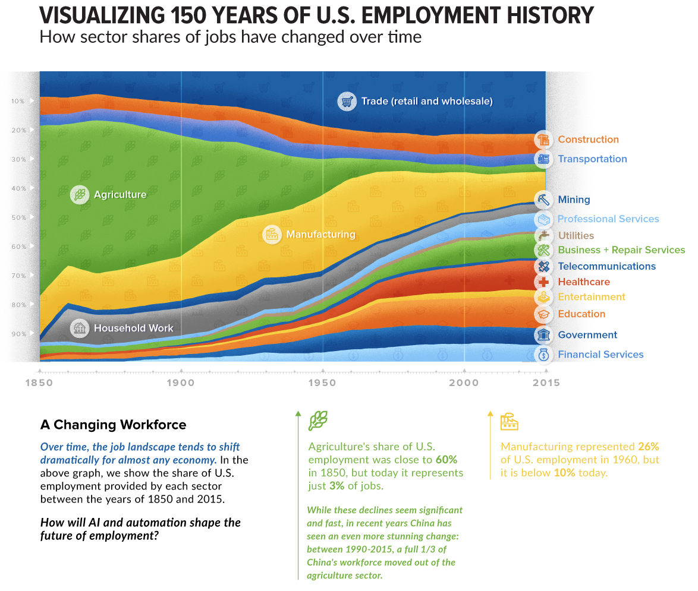

AI and the Future of Education.
Probably the most pretentious seminar title I’ve ever typed…
2024-04-04
PURPOSE OF UNIVERSITY
The original (~1000 years ago?) purpose of universities was to produce a “Universal Man” (barf), a well-rounded individual capable of contributing to the upper echelons of society. The focus was on a broad education covering arts, humanities, sciences, history, politics, and commerce.
Upper Echelons: Aimed at preparing students for societal leadership. Rich! Signifier of Status!
Broad Education: Covering arts, humanities, sciences. Highly cultured!
History and Politics: To make informed contributions.
Commerce: To navigate and influence the economic landscape.
INDUSTRIAL REVOLUTION
The German/Austrian educational revolution during the Industrial Revolution shifted the focus of public education towards producing productive workers. The system was designed to prepare individuals for the rigors of factory work, emphasizing obedience, quietude, and adherence to arbitrary rules (also barf).
Productive Workers: Main goal of the reformed education system.
Obedience and Quietude: Taught to prepare for factory settings.
Arbitrary Rules: Enforced to model factory-like hierarchy.
Contrast to ‘Universal Man’: Narrower focus compared to broad societal education.
OPTIMIZING FOR EFFICIENCY
Which of these best describes your educational experiences in Elementary, Secondary, and University systems?
Produce the most functional workers per unit cost.
OR
Maximize the ability of each individual to lead their best life.
HISTORICAL PATTERNS
AUTOMATION OF PHYSICAL LABOR
Many of the changes in the distribution of labor across sectors have been driven by changes in the efficiency of human labor, which can be considered as the ratio of production to cost.
Force Multiplier: An external tool or resource that allows you to do more work with less effort.1 This might increase production of a single worker, reducing the overall number of workers needed to perform a job.
Outsourcing: Outsourcing refers to the business practice of contracting out certain tasks or functions to third-party service providers instead of performing them in-house. One of the primary reasons companies outsource is to achieve cost reductions. Labor, infrastructure, or operational costs might be lower in another location or with a specialized provider.
A CLOSER LOOK
What are common features of the sectors that displaced Agriculuture and Manufacturing?
- The tasks are Place Bound.
- The sectors feature a lot of Knowledge Work.
KNOWLEDGE WORK?
Knowledge work 1 involves tasks that are information-based and Cognitive in nature :
- Intellectual Activity: It involves thinking, analyzing, and processing information more than manual labor.
- Non-routine: It doesn’t necessarily follow a set script or routine, and often involves problem-solving, decision-making, and creative thinking.
- Information-based: The main tools of a knowledge worker are information and knowledge, as opposed to physical tools or machinery.
- Driven by Expertise: Knowledge workers often have specific areas of expertise, education, or training that they draw upon to do their jobs.
- Autonomy: Knowledge workers often have a degree of autonomy in terms of how they approach and solve problems.
- Continuous Learning: The dynamic nature of information and the fields in which knowledge workers operate necessitates continuous learning and adaptation.
- Outcome-focused: The value of knowledge work is often measured by outcomes or results rather than the hours worked.
- Software developers
- Managers
- Analysts
- Consultants
- Designers
- Scientists
- Lawyers
- Doctors
- Educators
HUMAN COGNITION

- Intellectual Activity: It involves thinking, analyzing, and processing information more than manual labor.
- Non-routine: It doesn’t necessarily follow a set script or routine, and often involves problem-solving, decision-making, and creative thinking.
- Information-based: The main tools of a knowledge worker are information and knowledge, as opposed to physical tools or machinery.
- Driven by Expertise: Knowledge workers often have specific areas of expertise, education, or training that they draw upon to do their jobs.
- Autonomy: Knowledge workers often have a degree of autonomy in terms of how they approach and solve problems.
- Continuous Learning: The dynamic nature of information and the fields in which knowledge workers operate necessitates continuous learning and adaptation.
- Outcome-focused: The value of knowledge work is often measured by outcomes or results rather than the hours worked.
HUMAN COGNITIVE LABOR1
Aspects of human cognitive labor:
- Problem Solving: Identifying complex issues and reviewing related information to develop and evaluate options and implement solutions.
- Decision Making: Considering the relative costs and benefits of potential actions to choose the most appropriate one.
- Analysis: Examining data or information and breaking it down to understand its structure, trends, or implications.
- Learning and Adaptation: Acquiring new knowledge and skills and adjusting to new information or circumstances.
- Creativity: Generating new ideas, concepts, or solutions.
- Planning: Determining how a system or operation should work and how changes in conditions, operations, and environments will affect outcomes.
- Communication: Conveying information effectively, both verbally and in writing. This also includes the ability to listen and understand information from others.
- Emotional Intelligence: Recognizing, understanding, and managing our own emotions while also recognizing, understanding, and influencing the emotions of others.
SOME EXAMPLES
Here is a contract and our contract guidelines. Review and red-line the contract.
Does this Animal Care protocol conform to the federal guidelines?
I have a fever and a cough. What is wrong with me?
Gather data from these documents and summarize/analyze it.
How does this job applicant align with the needs described in our job description?
These tasks are difficult to automate because their inputs are complex, unstructured, and highly variable. They require human Cognitive Labor.
How does this relate to education?
BLOOM’S TAXONOMY (2001 update)
Educators often use Bloom’s taxonomy to structure learning objectives, assessments, and activities to ensure that they are addressing various levels of cognitive complexity and promoting critical thinking skills.

LEARNING OUTCOMES
LEARN AND INTEGRATE
Definition: Through independent learning and collaborative study, attain, use, and develop knowledge in the arts, humanities, sciences and social sciences, with disciplinary specialization and the ability to integrate information across disciplines.
THINK AND CREATE
Definition: Use multiple thinking strategies to examine real-world issues, explore creative avenues of expression, solve problems and make consequential decisions.
COMMUNICATE
Description: Acquire, articulate, create and convey intended meaning using verbal and non-verbal method of communication that demonstrates respect and understanding in a complex society.
CLARIFY PURPOSE AND PERSPECTIVE
Definition: Explore one’s life purpose and meaning through transformational experiences that foster an understanding of self, relationships and diverse global perspectives.
PRACTICE CITIZENSHIP
Definition: Apply principles of ethical leadership, collaborative engagement, socially responsible behavior, respect for diversity in an interdependent world and a service-oriented commitment to advance and sustain local and global communities. NOTE: likely best expressed in advanced students.
2022: A TIPPING POINT

GENERATIVE AI
Generative Artificial Intelligence describes a group of algorithms or models that can be used to create new content, including text, code, images, video, audio, and simulations.
Examples:
ChatGPT: Text to Text Generative Pretrained Transformer with a chat interface
MidJourney: Text to Image
an abstract representation of an unemployment line caused by the emergence of artificial general intelligence, glowing blue computational network, photorealistic, dark technology, dark academia
Sora: text to video
Suno: text to music.
Hardtechno Dark John Carpenter Synth
{.absolute .width=“60%”}
LARGE LANGUAGE MODELS (LLM)
A type of AI model designed to understand and generate human-like text.
- Model Type: Subset of deep learning within machine learning.
- Architecture: Commonly based on the Transformer architecture.
- Size: Contains billions to trillions of parameters.
- Training Data: Trained on vast datasets, including books, articles, and web content.
- Functionality: Generates coherent text, answers questions, translates, summarizes, and more.
- Transfer Learning: Fine-tuned on specific datasets for specialized tasks.
- Generates based on training data patterns.
- Doesn’t “understand” like humans.
- Can produce incorrect or nonsensical answers.
- Influenced by biases in training data.
CAPABILITIES
genAI + EDUCATION = GOOD?
- Personalized Learning: AI can tailor education to each student’s learning style and pace, enhancing engagement and comprehension.
- Support for Teachers: AI offers scalable solutions for teacher training and feedback, improving teaching practices and classroom dynamics.
- Enhanced Accessibility: AI facilitates universal access to quality education, breaking down barriers related to location, resources, and disabilities.
- Fostering Creativity and Higher-Level Thinking: By automating routine tasks, AI encourages students to focus on creative, analytical, and strategic aspects of learning.
- Data-Driven Insights: AI can analyze vast amounts of educational data, providing insights that help educators make informed decisions to improve learning outcomes.
genAI + EDUCATION = BAD?
- Bias and Cultural Insensitivity: AI systems might perpetuate biases or fail to reflect the diverse experiences of global learners.
- Undermining Critical Thinking: Overreliance on AI for problem-solving and content creation could impair students’ ability to think critically and independently.
- Privacy Concerns: The collection and analysis of student data by AI systems raise significant privacy and security issues.
- Misinformation and Reliability: AI-generated content may include inaccuracies, promoting misinformation if not properly vetted.
- Dependency and Devaluation of Human Teachers: Excessive dependence on AI could devalue the irreplaceable human elements in teaching, such as empathy, intuition, and motivational support.
GOLDEN RULE
Are you using AI to help you learn, grow, and maximize your impact?
OR
Are you using AI to misrepresent your abilities?
AI and EDUCATION
SHOW don’t TELL
Challenge: Produce a working example of how genAI can contribute positively to both student learning and faculty efficiency.
BIO 314
BIO314 CUSTOMIZED WEBSITE
This took me ~ 2 hours.
Will Barrie crash and burn?
Resources
https://www.youtube.com/@samwitteveenai
https://www.youtube.com/@4IR.David.Shapiro
https://www.youtube.com/@mreflow
https://www.futuretools.io
https://snorkel.ai/large-language-models-llms/
https://www.mckinsey.com/mgi/our-research/generative-ai-and-the-future-of-work-in-america
https://thehill.com/opinion/congress-blog/3913530-artificial-intelligence-is-not-going-to-take-all-our-jobs/
https://arxiv.org/abs/2303.10130
https://www.analyticsvidhya.com/blog/2023/07/the-fascinating-evolution-of-generative-ai/
https://kyleake.medium.com/data-behind-the-large-language-models-llm-gpt-and-beyond-8b34f508b5de
https://arxiv.org/pdf/2303.08774.pdf
https://www.fiddler.ai/blog/the-missing-link-in-generative-aimonit
https://www.fiddler.ai/blog/the-missing-link-in-generative-ai
https://www.mckinsey.com/featured-insights/mckinsey-explainers/what-is-generative-ai
https://www.nvidia.com/en-us/glossary/data-science/large-language-models/
https://blogs.nvidia.com/blog/2023/01/26/what-are-large-language-models-used-for/
https://www.promptengineering.org/what-are-large-language-model-llm-agents/
brobison@uidaho.edu